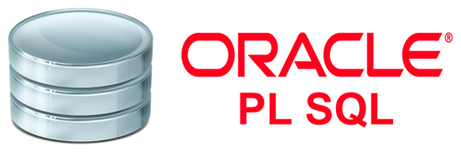
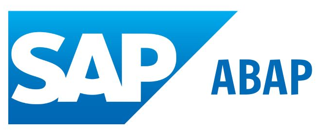

Victor Portillo
Más de 25 años construyendo sistemas que funcionan: desde soporte técnico hasta análisis y desarrollo en Oracle y SAP. Hoy, como desarrollador independiente en Charlotte, NC, hago páginas web y aplicaciones para negocios.
Perfil
Empecé en 1998 dando soporte a puntos de venta en un supermercado, y de ahí pasé al Help Desk y al desarrollo en Grupo OPSA, el grupo de periódicos más grande de Honduras (La Prensa, El Heraldo), donde trabajé 17 años. Después seguí como analista programador en NGS, para Gildan Activewear.
Mi trabajo siempre ha sido el mismo: entender cómo funciona un negocio y construir el sistema que lo sostiene — nómina, facturación, comisiones, recursos humanos, interfaces entre sistemas. Hoy aplico esa experiencia como independiente, con herramientas actuales como Flutter.
Experiencia
De 1998 a hoy, en Honduras y en Estados Unidos.
Analista programador de sistemas informáticos
Análisis, diseño, desarrollo y mantenimiento de sistemas; mejora continua de procesos.
Negocio propio
Servicios y desarrollo de tecnología por cuenta propia.
Analista programador de sistemas informáticos
Análisis, diseño, desarrollo y mantenimiento de sistemas; mejora continua de procesos. Sistemas de recursos humanos, nómina, facturación y comisiones; interfaces Oracle ↔ SAP.
Técnico Help Desk
Instalación de software, reparación de PC e impresoras, instalación de redes, mantenimiento de equipo y soporte a usuarios.
Auxiliar de Cómputo
Soporte a puntos de venta y balanzas, mantenimiento de precios e inventarios, cierre diario de ventas y reportes.
Proyectos recientes
Trabajo propio, publicado y funcionando.
Sitio bilingüe de 5 páginas para una empresa de limpieza en Charlotte: 10 servicios, cotización en línea y galería. Publicado en 2026.
Ver el sitio →Mis Viajes — app Flutter
App propia para registrar los viajes del día en el camión, con historial y conteo por fecha.
KITT
Compañero de voz para el camión: comandos de voz para anotar viajes y consultar el conteo sin tocar el teléfono.
Habilidades

PL/SQL Oracle APEX SAP ERP/R3 (FI, RH, MM) JD Edwards ERP
ABAP Visual Basic C# (DevExpress) ASP.NET
ASP.NET

 Flutter y Dart
Flutter y Dart

 HTML, CSS y JavaScript
HTML, CSS y JavaScript

 Git y GitHub
Toad for Oracle
Git y GitHub
Toad for Oracle
- Recursos humanos: vacaciones, prestaciones laborales, constancias para colaboradores.
- Nómina: cálculos de ISR, IHSS, RAP, INFOP y control de horas extras.
- Comisiones: compensación variable para gestores de ventas y agencias de publicidad.
- Facturación: publicidad, circulación, suscripciones y telefonía celular, con Web Services.
- Interfaces Oracle ↔ SAP: facturación, planilla y maestros de productos e inventarios.
- Producción: herramienta de planeación para Garment Dyeing.
Formación y estudios
Educación técnica y formación continua.
Bachiller y Técnico en Computación
- HTML5 y CSS3 — New Horizons (2013)
- Windows Forms con Microsoft Visual Studio 2005 — C.I.I. (2007)
- Curso Básico de ABAP/4 — Team Solutions (2005)
- Oracle: Data Modeling, Forms y Reports 2000 — Diario La Prensa (2005)
- Windows 2000 Network and Operating System Essentials — C.I.I. (2003)
- Servicio al cliente, liderazgo eficaz y trabajo en equipo — Dale Carnegie Training (2003)
Idiomas
- Español: nativo.
- Inglés: intermedio.
¿Tienes un proyecto en mente?
Cuéntame qué necesitas y lo cotizamos a la medida.
Cuéntanos tu proyectoReferencias disponibles a solicitud.